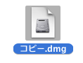
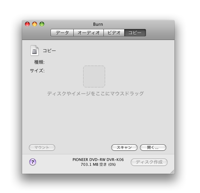
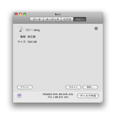
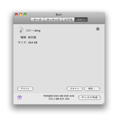

ディスクをコピーする:
Burnはディスクイメージを使用できます。ディスクイメージとはディスクを表すファイルです。
注意: マルチセッション・ディスクは例外オーディオCDディスクとしてコピーされません。
Pantherにおいてはcdr, toast, iso と非常に基本的なcue/bin ファイルのみがディスク作成されます。それらをマウントし、リストにドロップすることにより他のディスクイメージが使われるかもしれません。
1 ディスクイメージまたはディスクを選択:
ディスク作成をしたいディスクイメージまたはディスクを選択します。

2 ウインドウにディスクイメージまたはディスクをドロップ
Burnのメインウインドウに、ディスクイメージ(dmg, img, toast, iso, cdr, dvdr,
cue/bin and TOC)またはディスクをドロップします。
 

3 ディスク作成ボタンをクリックします
ダイアログが表示されます。

4 オプションを選択します
ディスク作成時のオプションを選択します。更に多くの設定についてはBurnのメインメニュー「環境設定」を見てください。

5 ディスク作成
ディスクを作成する為に「ディスク作成」ボタンをクリックします。

6 Burn
はディスクを作成します
ディスク作成中にBurnは作成中の状態についてのダイアログを表示します。